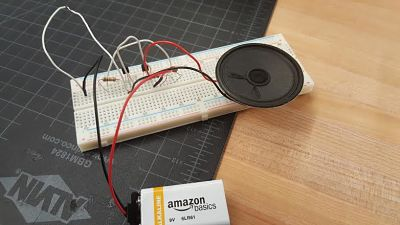
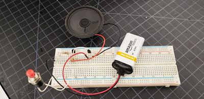

During this week, we learned about sodering and electronics. First we learned each of the different parts in a cricut and their symbols.
Resistors limit the flow of electricty in the cricut. LED or Light Emitting Diode transfers the electrcity into light. Switch turns on and off
the flow of electrcity. The multimeter is a tool used to measure the volt and amps of a cricut. Potentiometer is type of resistor that is able to
change the resistance by sliding or rotating a dile. A diode has higher resistance in one direction, and lower in the other. Transistors are
used to switch the electric power. Capacitors store the electric energy for the cricut. Ohms are the measure of resistance, Amps measure the
current of electrcity and Volts measure the voltage. DC stands for direct current, and AC stands for alternate current. DC cricuts are
all in a linear fashion while AC are in a simultaneous fashion. Here are the practice cricuts I completed.


In this unit we also practiced sodering. We heated the metal tin up to 750 degrees until it melted. Out job was to create a digital
clock by sodering all the componets together.